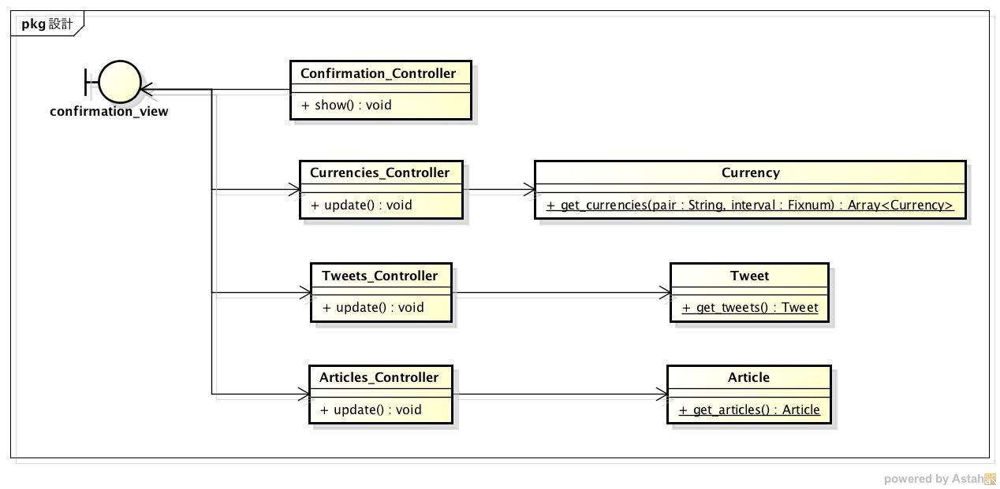

詳細仕様¶
振る舞い¶
通貨の価格変動を確認する¶
シーケンス図

- 利用者がWebページにアクセスしてからグラフを確認するまでの流れ
- アクセスを受けたConfirmation_viewがConfirmation_Controllerにアクセスの受信を通知する
- 受信したConfirmation_Controllerがビューを表示する（この時点では何も表示されない）
- Currencies_ControllerがCurrencyオブジェクトの配列を取得して返す
- ビューにグラフを表示する
- 以降は定期的に通貨情報の取得を繰り返す
変動に関連する情報を取得する¶
シーケンス図

- 利用者がWebページにアクセスしてから関連情報を確認するまでの流れ
- アクセスを受けたConfirmation_viewがConfirmation_Controllerにアクセスの受信を通知する
- 受信したConfirmation_Controllerがビューを表示する（この時点では何も表示されない）
- Tweets_ControllerがTweetオブジェクトを取得して返す
- Articles_ControllerがArticleオブジェクトを取得して返す
- ビューに情報を表示する
- 以降は定期的にツイートと記事の取得を繰り返す
構造¶
クラス図
- MVCモデルを利用する
- View
- confirmation_view
- Webブラウザ上で表示する画面
- confirmation_view
- Controller
- Confirmation_Controller
- confirmation_viewのコントローラ
- グラフや関連情報の更新を行う
- Currencies_Controller
- Currencyクラスのコントローラ
- Currencyオブジェクトを取得し，ビューに表示する
- Tweets_Controller
- Tweetクラスのコントローラ
- Tweetオブジェクトを取得し，ビューに表示する
- Articles_Controller
- Articleクラスのコントローラ
- Articleオブジェクトを取得し，ビューに表示する
- Confirmation_Controller
- Model
- Currency
- 通貨情報を表すクラス
- 以下の情報を保持する
- from_date: 集計対象データの範囲（開始時刻）
- to_date: 集計対象データの範囲（終了時刻）
- pair: 為替のペペアコード（例：USDJPY）
- interval: 集計対象期間
- 以下のいずれかが保持されている
- 5-min
- 10-min
- 20-min
- 30-min
- 1-hour
- 2-hour
- 3-hour
- 6-hour
- 12-hour
- 1-day
- 1-week
- 1-month
- 2-month
- 3-month
- 6-month
- 1-year
- 以下のいずれかが保持されている
- open: 始値
- close: 終値
- high: 高値
- low: 安値
- created_at: 通貨情報が作成された日時
- updated_at: 通貨情報が更新された日時
- Tweet
- ツイートを表すクラス
- 以下の情報を保持する
- tweet_id: ツイートのID
- user_name: ツイートのユーザー名
- profile_image_url: アカウントのプロフィール画像のURL
- full_text: ツイート本文
- tweeted_at: ツイート日時
- created_at: ツイート情報が作成された日時
- Article
- 記事を表すクラス
- 以下の情報を保持する
- published: 記事が発行された日時
- title: 記事のタイトル
- summary: 記事の要約
- url: 記事へのURL
- created_at: 記事情報が作成された日時
- データベースには外部スクリプトにより定期的にレコードが追加される
- 通貨，ツイート・日経の情報を取得するスクリプトが定期的に実行されてMySQLに登録される
- Currency